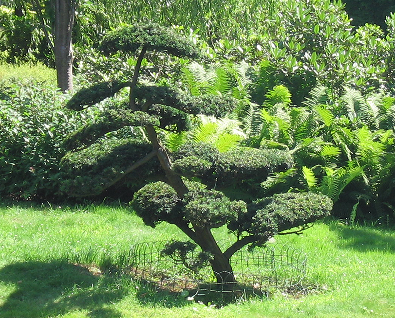

Piękny ogród wymaga starannego doboru roślin i zaangażowania – wiedzieli o tym już Chińczycy, których arystokratyczne rody prześcigały się w tworzeniu zjawiskowych skwerów i parków przypałacowych. Mimo, że ogrody japońskie jednoznacznie kojarzą się z krajem kwitnącej wiśni, swoją kolebkę mają właśnie w Chinach. Duży nacisk na kształt tamtejszych instalacji miała filozofia buddyjska. Jej wpływ widać w nawiązaniu do naturalnego ukształtowania terenu oraz harmonii człowieka z przyrodą. Idealny efekt zostaje osiągnięty, jeśli wygląd ogrodu naśladuje dziką naturę, dlatego tak duży nacisk kładzie się na tworzenie naturalnego krajobrazu, jednocześnie próbując ukryć jakiekolwiek ślady działalności człowieka. Stąd zaleca się, aby topografia terenu, na którym powstaje ogród japoński, była jak najbardziej zbliżona do rzeczywistej. Ogrody japońskie zakładane są najczęściej przy prywatnych posesjach, na stosunkowo małych powierzchniach.
Pierwsze wzmianki o ogrodach japońskich datuje się już na 612 rok naszej ery, choć tradycja ich tworzenia sięga znacznie dalej. Przez długie lata sztuka kształtowania krajobrazu w tym stylu obejmowała jedynie Japonię. Jednak wraz z popularyzacją kosmopolitycznego stylu życia oraz przenikaniem się kultury europejskiej i japońskiej, wiele zwyczajów i tradycji zostało przeszczepionych z jednej kultury, na grunt drugiej i odwrotnie.
Taiko bashi Widok na staw i przerzucony nad nim łukowy mostek – taiko bashi symbolizujący drogę do raju i nieśmiertelności.
Istota ogrodów japońskich
Celem osób tworzących japoński ogród jest możliwość wypoczynku w naturalnym i przyjaznym środowisku – wśród roślin, skał i wody. Dwa ostatnie składają się na podstawowe elementy każdego ogrodu japońskiego. Dlaczego kamień i woda? W kulturze dalekiego wschodu kamień symbolizuje siłę i wieczność. Japończycy od wieków doceniają jego właściwości, zwracając uwagę na jego trwałość i odporność na niszczące działanie przyrody. W technice tworzenia ogrodów japońskich wykorzystuje się głównie duże fragmenty skalne o możliwie najbardziej nietypowych i zróżnicowanych kształtach. Nawiązując do kwestii naturalności, dużą wagę przywiązuje się także do faktury kamienia – podobnie jak w przypadku kształtów, najlepszym materiałem będą kamienie o niestandardowej, często szorstkiej, chropowatej i nieprzyjaznej powierzchni.
Kamienne elementy występują często jako centralny element kompozycji ogrodowej. W przypadku pojedynczych egzemplarzy stanowią one punkt odniesienia – to wokół nich buduje się szatę roślinną, nie odwrotnie. Czasem główne elementy ogrodu zbudowane są z kilku pojedynczych kamieni, ułożonych w symbolicznych konfiguracjach.
Układ skalny I Skały, piasek i żwir – ogrody medytacyjne miały ułatwiać osiągnięcie oświecenia i pomagać w ćwiczeniu dyscypliny. Nazywane też ogrodami suchymi czy kamiennymi – kare-sansui. Nierozerwalnie związane są z religią Zen.
Układ skalny II Cechą charakterystyczną układów skalnych jest asymetria. Skały grupowane są według schematu 3, 5 i 7. Najbardziej popularny jest układ 3 skał gdzie najwyższa skała reprezentuje niebo, najkrótsza ziemię i średnia ludzkość, czyli most między niebem a ziemią.
Odmienna filozofia wiąże się z wykorzystaniem kamienia jako budulca, z którego utworzone są ścieżki, brzegi oczek wodnych i stawów czy ozdobne łuki. W tym przypadku kamień stosowany jest jako dodatek, choć musi doskonale współgrać z innymi elementami. Jedna z odmian ogrodów japońskich – ogrody suche – wykorzystuje głównie elementy kamienia. Instalacje w tego typu ogrodzie mają za zadanie imitować taflę wody, łącznie z falami, a ich specyficzny wygląd zapada na długo w pamięci zwiedzających.
Woda – symbol życia, dynamiki i ciągłości, jest nieodzownym elementem każdego ogrodu japońskiego. Jej mistyczny charakter najczęściej odzwierciedla się w postaci mini wodospadów, strumieni, a także stawów, sadzawek czy oczek wodnych. Ze względu na swoją specyfikę instalacje wodne uważane są za najpiękniejsze elementy ogrodów japońskich. Towarzyszą im nieodłącznie wszelkiego rodzaju pomosty i mosty wykonane z drewna, latarnie, altany, a w większych ogrodach także imitujące sukija – wykonane z drewna, papieru i gliny pawilony herbaciane. Tam mamy okazję uczestniczyć w rytualnym piciu zaparzonej w tradycyjny sposób herbaty.
Otoko-daki Kaskada „męska” – wartki, szybko płynący strumień zaprojektowany tak, aby odbijał się od niego księżyc. U podstawy znajduje się płaski kamień, o który rozbija się słup wody.
Otoko-daki – nurt rzeki W symbolice buddyjskiej, woda i kamień to ying-yang, dwa przeciwieństwa, które siebie uzupełniają.
Onna-daki Kadkada „żeńska” – to cichy i spokojnie płynący strumień wody o wyciszonym nurcie raz dwóch stopniach pośrednich.
Twórcy ogrodów japońskich największą swoją uwagę poświęcają trzeciemu elementowi – roślinności. Jej pielęgnacja wymaga specjalistycznej wiedzy i umiejętności. Najlepszym świadectwem wagi, jaką ma dla Japończyków odpowiedni dobór roślin i dbałość o nie jest fakt istnienia rożnego rodzaju sztuk z nimi związanych, miedzy innymi ikebana – sztuka układania kwiatów czy bonsai – sztuka miniaturyzowania drzew lub krzewów. W założeniu ogród japoński ma składać się z ograniczonej ilości gatunków roślin, które pełnią funkcje tła dla pozostałych elementów. Pomimo tego, że dominującym kolorem powinna być zieleń, dużą cześć szaty roślinnej stanowią gatunki przebarwiające się oraz obficie kwitnące. Tutaj nasuwa się oczywiste nawiązanie do drzew wiśni różnych odmian, które wiosną pokrywa spora ilość kwiatów. Drzewo sosny, podobnie jak klon i miłorząb, jest jednym z najbardziej powszechnie występujących w ogrodach japońskich. W Japonii symbolizuje ono trwałość i długowieczność, a jego przymioty korelują z właściwościami kamienia.
Oprócz kwitnących wiśni, wśród najczęściej spotykanych kwiatów, w ogrodach japońskich dominują magnolie, rododendrony oraz glicynie – wszystkie znane są z okazałych, kwiatostanów. Charakterystyczną rośliną, występującą pośród innych, jest także bambus, symbolizujący przyjaźń i wytrwałość.
Bonsai Sztuka miniaturyzowania drzew lub krzewów. Efekt ten jest uzyskiwany poprzez specyficzne przycinanie oraz pielęgnację.
Bonsai – historia Sztuka uprawy bonsai pochodzi z Chin, mimo że jest kojarzona głównie z Japonią. Według źródeł, Japończycy włączyli ją do swych tradycji w VIII wieku n.e. Sztuka bonsai zanikła w Chinach, podczas gdy w Japonii osiągnęła doskonałość.

Bonsai – style W sztuce bonsai wyróżnia się liczne style, według których kształtowane jest drzewko, różniące się one głównie kształtem pnia oraz pochyleniem rośliny. Drzewko bonsai nigdy nie jest „skończone” – jest ono żywą rośliną, wymagającą stałej pielęgnacji.
Iwagumi Układ skał – iwagumi z drzewkami bonsai przed wejściem bocznym, północnym. Iwagumi odzwierciedla tradycję, kulturę i duchowość Japończyków kultywowaną od wielu lat. Uklad wzorowany jest na naturalnej scenerii występującej w przyrodzie.
Klon japoński Piękne czerwonolistne klony japońskie w naturze występują w dolinach górskich na północy Japonii – na Hokkaido i na północnym krańcu wyspy Honsiu. Klony japońskie to kilkumetrowe nisko rozgałęzione drzewka. W Japonii największe klony osiągają po 100 latach 10 metrów wysokości i 40 centymetrów średnicy pnia.
Flora ogrodu japońskiego Bogata dendroflora ogrodu japońskiego liczy blisko 200 gatunków i odmian drzew i krzewów. Rosną tu między innymi sosna drobnokwiatowa, cyprysik tępołuskowy, ostrokrzew, klon japoński czy drzewka bonsai.
Sakura Ozdobne drzewa wiśniowe zwane w Japonii sakura są symbolem kraju oraz powszechnie rozpoznawalnym elementem kultury japońskiej. Najbardziej lubianą przez Japończyków odmianą jest somei yoshino. Jej kwiaty są niemal całkowicie białe, lekko zabarwione bladym różem. Odmiana wzięła swoją nazwę od wioski Somei.